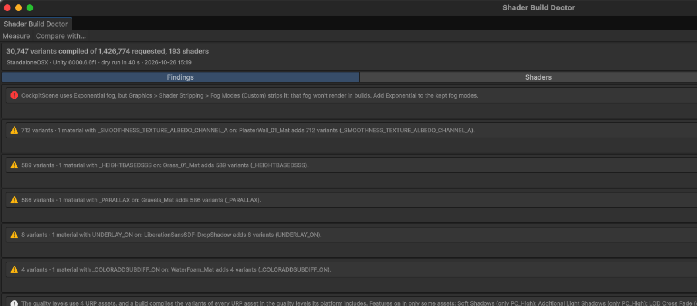

Measured, not compiled
A dry-run build records every variant that survives URP's and your project's stripping, then strips them all, so nothing is compiled. The counts match real builds; your incremental build cache is set aside and put back.
Unity's URP 3D Sample: the same 30,747 variants, measured and compiled. It also found that the sample's Cockpit scene loses its fog in builds
HDRP test project: the same 3,697 variants, measured and compiled
Variants in that project after the three changes the findings pointed at: 40,403 → 1,326
What it tells you
Why each shader has so many variants
The keywords and multi_compile groups that multiply each pass, and what turns each one on in your project: "PC_RPAsset: Soft Shadows on", "Graphics: Fog Modes set to Custom", or the materials that enable it.
Materials that will render pink
Shaders a stripper removes while materials in the build still use them, and Built-in pipeline shaders left in a URP build. Found before your players see them.
Settings that waste variants
Fog and lightmap modes kept for scenes that don't use them, instancing variants for every shader, Built-in shaders left in a URP project, quality levels that add up their features. Each with what it costs.
A budget for CI
A batch command fails the build when variants grow past a budget you keep in your repository, and writes a summary of what changed and why, ready for a pull request.
Strip rules you can preview
Optional rules to strip what you don't need, off until you enable them. The preview shows what each rule removes and warns about the materials it would break.
Your settings, put back
The dry run uses Mono instead of IL2CPP and, on Android, exports the project without your keystore. Everything goes back the way it was when it ends.
The editor window
Measured on Unity's URP 3D Sample. Red findings break how the game looks; yellow ones cost variants. Each one opens the setting or selects the materials it is about.

Details
- Unity 2022.3 LTS and Unity 6.
- URP and Built-in: measurement, findings and the settings behind each keyword. HDRP: measurement, findings about materials, CI and strip rules.
- Tested on macOS and Android build targets.
- Editor-only: nothing is added to your builds. Runs locally: no network access, no accounts, no analytics.
- A free Lite edition measures the variants per shader; the full edition explains and fixes them.